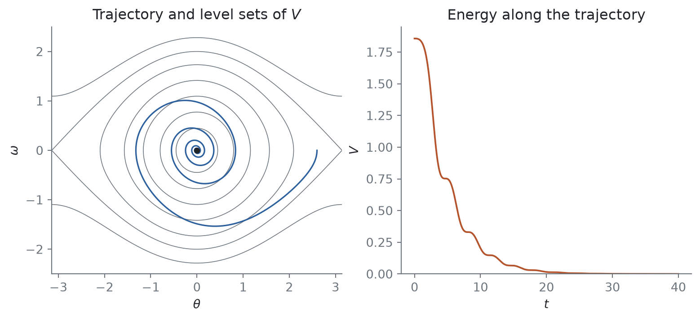
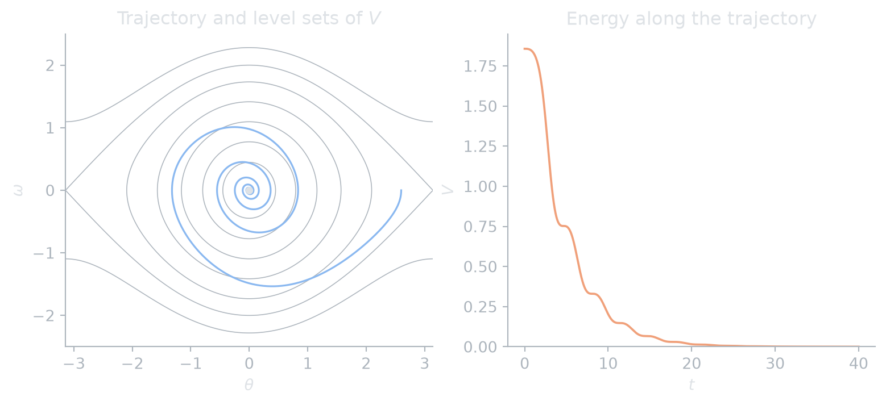

Nam Le
8 August 2026
Linearization decides stability only at hyperbolic equilibria. Lyapunov’s second method works directly with the nonlinear system \[ \dot x = f(x), \qquad f(x^*) = 0, \tag{1}\] by finding a quantity that decreases along solutions, the way energy does in a mechanical system with friction.
Definition 1 (Stability) The equilibrium \(x^*\) of Equation 1 is stable if for every \(\varepsilon > 0\) there is \(\delta > 0\) such that \(|x(0) - x^*| < \delta\) implies \(|x(t) - x^*| < \varepsilon\) for all \(t \geq 0\). It is asymptotically stable if in addition \(x(t) \to x^*\) for all \(x(0)\) close enough to \(x^*\).
Definition 2 (Lyapunov function) Let \(U\) be a neighborhood of \(x^*\). A \(C^1\) function \(V : U \to \R\) is a Lyapunov function for \(x^*\) if \(V(x^*) = 0\), \(V(x) > 0\) for \(x \neq x^*\), and \[ \dot V(x) = \nabla V(x) \cdot f(x) \leq 0 \quad \text{for all } x \in U. \]
\(\dot V\) is the rate of change of \(V\) along a solution, computed without knowing the solution.
Theorem 1 (Lyapunov) If \(x^*\) has a Lyapunov function, it is stable. If moreover \(\dot V(x) < 0\) for all \(x \in U \setminus \{x^*\}\), it is asymptotically stable.
Proof. Take \(\varepsilon\) small enough that the closed ball \(\bar B_\varepsilon(x^*)\) lies in \(U\), and let \(m > 0\) be the minimum of \(V\) on the sphere \(|x - x^*| = \varepsilon\). By continuity choose \(\delta\) with \(V < m\) on \(B_\delta(x^*)\). A solution starting there has \(V(x(t)) \leq V(x(0)) < m\) for all \(t \geq 0\), so it can never reach the sphere. For the strict case, \(V(x(t))\) decreases to some limit \(c \geq 0\). If \(c > 0\), the solution stays in a compact set where \(x \neq x^*\) and \(\dot V \leq -\kappa < 0\), so \(V\) would decrease without bound, a contradiction. Hence \(V(x(t)) \to 0\), and so \(x(t) \to x^*\).
Example 1 For \(\dot x = -x^3\) the linearization at \(0\) is \(\dot x = 0\), which says nothing. With \(V(x) = x^2\) we get \(\dot V = -2x^4 < 0\) for \(x \neq 0\), so the origin is asymptotically stable by Theorem 1.
The natural Lyapunov function is often the energy, and friction usually removes energy only when something is moving. That gives \(\dot V \leq 0\) but not \(\dot V < 0\), and Theorem 1 stops at plain stability. LaSalle’s invariance principle closes the gap (LaSalle 1960).
Theorem 2 (LaSalle’s invariance principle) Let \(K\) be a compact set that is positively invariant for Equation 1, and let \(V\) be \(C^1\) with \(\dot V \leq 0\) on \(K\). Let \(M\) be the largest invariant set contained in \(E = \{x \in K : \dot V(x) = 0\}\). Then every solution starting in \(K\) approaches \(M\) as \(t \to \infty\).
Example 2 (The damped pendulum) Take \(\ddot\theta + c\,\dot\theta + \sin\theta = 0\) with \(c > 0\), written as \(\dot\theta = \omega\), \(\dot\omega = -\sin\theta - c\,\omega\). The energy \[ V(\theta, \omega) = \tfrac12 \omega^2 + 1 - \cos\theta \] satisfies \(\dot V = \omega\dot\omega + \sin\theta\,\dot\theta = -c\,\omega^2 \leq 0\). It vanishes on the whole line \(\omega = 0\), so Theorem 1 only gives stability.
For \(0 < \ell < 2\) the sublevel set \(K = \{V \leq \ell,\ |\theta| < \pi\}\) is compact and positively invariant, and \(E = K \cap \{\omega = 0\}\). A solution that stays in \(E\) has \(\omega \equiv 0\), so \(\dot\omega = -\sin\theta = 0\) and \(\theta = 0\). So \(M = \{(0, 0)\}\), and by Theorem 2 the bottom equilibrium is asymptotically stable.
Figure 1 shows this: the trajectory crosses the level sets of \(V\) inward, and \(V\) decreases in steps, pausing each time the pendulum turns around (\(\omega = 0\)).
c_damp = 0.25
f = lambda x: np.array([x[1], -np.sin(x[0]) - c_damp * x[1]])
t, xs = rk4(f, [2.6, 0.0], 40, h=0.01)
V = lambda th, om: 0.5 * om**2 + 1 - np.cos(th)
TH, OM = np.meshgrid(np.linspace(-np.pi, np.pi, 300), np.linspace(-2.5, 2.5, 300))
def draw(fig, axes, c):
ax = axes[0]
ax.contour(TH, OM, V(TH, OM), levels=[0.1, 0.3, 0.6, 1.0, 1.5, 2.0, 2.6], colors=c.muted, linewidths=0.6)
ax.plot(xs[:, 0], xs[:, 1], color=c.accent, lw=1.2)
ax.plot(0, 0, "o", color=c.fg, ms=4)
ax.set(xlabel=r"$\theta$", ylabel=r"$\omega$", title="Trajectory and level sets of $V$")
ax = axes[1]
ax.plot(t, V(xs[:, 0], xs[:, 1]), color=c.accent2, lw=1.4)
ax.set(xlabel=r"$t$", ylabel=r"$V$", title="Energy along the trajectory", ylim=(0, None))
themed(draw, 1, 2, figsize=(8, 3.6))

Remark. LaSalle’s principle is also how one proves the global statements in many applications: if \(V\) is radially unbounded (\(V(x) \to \infty\) as \(|x| \to \infty\)), every sublevel set is compact and the conclusion holds for all initial conditions (Khalil 2002, sec. 4.2).
@online{le2026,
author = {Le, Nam},
title = {Lyapunov Functions and {LaSalle’s} Principle},
date = {2026-08-08},
url = {https://dynamics.namln.org/posts/2026-08-08-lyapunov-functions/},
langid = {en}
}
---
title: "Lyapunov functions and LaSalle's principle"
description: "Proving stability without solving the equations, and what to do when the energy only decreases weakly."
date: 2026-08-08
categories: [stability]
---
```{python}
#| include: false
import sys; sys.path.insert(0, "..")
import numpy as np
from _blog import themed, rk4
```
[Linearization](../2026-08-01-linear-systems-in-the-plane/index.qmd) decides stability only at hyperbolic equilibria. Lyapunov's second method works directly with the nonlinear system
$$
\dot x = f(x), \qquad f(x^*) = 0,
$$ {#eq-system}
by finding a quantity that decreases along solutions, the way energy does in a mechanical system with friction.
## Stability and Lyapunov functions
::: {#def-stability}
## Stability
The equilibrium $x^*$ of @eq-system is **stable** if for every $\varepsilon > 0$ there is $\delta > 0$ such that $|x(0) - x^*| < \delta$ implies $|x(t) - x^*| < \varepsilon$ for all $t \geq 0$. It is **asymptotically stable** if in addition $x(t) \to x^*$ for all $x(0)$ close enough to $x^*$.
:::
::: {#def-lyapunov}
## Lyapunov function
Let $U$ be a neighborhood of $x^*$. A $C^1$ function $V : U \to \R$ is a **Lyapunov function** for $x^*$ if $V(x^*) = 0$, $V(x) > 0$ for $x \neq x^*$, and
$$
\dot V(x) = \nabla V(x) \cdot f(x) \leq 0 \quad \text{for all } x \in U.
$$
:::
$\dot V$ is the rate of change of $V$ along a solution, computed without knowing the solution.
::: {#thm-lyapunov}
## Lyapunov
If $x^*$ has a Lyapunov function, it is stable. If moreover $\dot V(x) < 0$ for all $x \in U \setminus \{x^*\}$, it is asymptotically stable.
:::
::: {.proof}
Take $\varepsilon$ small enough that the closed ball $\bar B_\varepsilon(x^*)$ lies in $U$, and let $m > 0$ be the minimum of $V$ on the sphere $|x - x^*| = \varepsilon$. By continuity choose $\delta$ with $V < m$ on $B_\delta(x^*)$. A solution starting there has $V(x(t)) \leq V(x(0)) < m$ for all $t \geq 0$, so it can never reach the sphere. For the strict case, $V(x(t))$ decreases to some limit $c \geq 0$. If $c > 0$, the solution stays in a compact set where $x \neq x^*$ and $\dot V \leq -\kappa < 0$, so $V$ would decrease without bound, a contradiction. Hence $V(x(t)) \to 0$, and so $x(t) \to x^*$.
:::
::: {#exm-cubic}
For $\dot x = -x^3$ the linearization at $0$ is $\dot x = 0$, which says nothing. With $V(x) = x^2$ we get $\dot V = -2x^4 < 0$ for $x \neq 0$, so the origin is asymptotically stable by @thm-lyapunov.
:::
## When $\dot V$ is only semi-definite
The natural Lyapunov function is often the energy, and friction usually removes energy only when something is moving. That gives $\dot V \leq 0$ but not $\dot V < 0$, and @thm-lyapunov stops at plain stability. LaSalle's invariance principle closes the gap [@lasalle1960].
::: {#thm-lasalle}
## LaSalle's invariance principle
Let $K$ be a compact set that is positively invariant for @eq-system, and let $V$ be $C^1$ with $\dot V \leq 0$ on $K$. Let $M$ be the largest invariant set contained in $E = \{x \in K : \dot V(x) = 0\}$. Then every solution starting in $K$ approaches $M$ as $t \to \infty$.
:::
::: {#exm-pendulum}
## The damped pendulum
Take $\ddot\theta + c\,\dot\theta + \sin\theta = 0$ with $c > 0$, written as $\dot\theta = \omega$, $\dot\omega = -\sin\theta - c\,\omega$. The energy
$$
V(\theta, \omega) = \tfrac12 \omega^2 + 1 - \cos\theta
$$
satisfies $\dot V = \omega\dot\omega + \sin\theta\,\dot\theta = -c\,\omega^2 \leq 0$. It vanishes on the whole line $\omega = 0$, so @thm-lyapunov only gives stability.
For $0 < \ell < 2$ the sublevel set $K = \{V \leq \ell,\ |\theta| < \pi\}$ is compact and positively invariant, and $E = K \cap \{\omega = 0\}$. A solution that stays in $E$ has $\omega \equiv 0$, so $\dot\omega = -\sin\theta = 0$ and $\theta = 0$. So $M = \{(0, 0)\}$, and by @thm-lasalle the bottom equilibrium is asymptotically stable.
:::
@fig-energy shows this: the trajectory crosses the level sets of $V$ inward, and $V$ decreases in steps, pausing each time the pendulum turns around ($\omega = 0$).
::: {#fig-energy}
```{python}
#| renderings: [light, dark]
#| fig-alt: "Left: level sets of the pendulum energy with a trajectory spiralling inward to the origin. Right: the energy along that trajectory, decreasing in a staircase pattern."
c_damp = 0.25
f = lambda x: np.array([x[1], -np.sin(x[0]) - c_damp * x[1]])
t, xs = rk4(f, [2.6, 0.0], 40, h=0.01)
V = lambda th, om: 0.5 * om**2 + 1 - np.cos(th)
TH, OM = np.meshgrid(np.linspace(-np.pi, np.pi, 300), np.linspace(-2.5, 2.5, 300))
def draw(fig, axes, c):
ax = axes[0]
ax.contour(TH, OM, V(TH, OM), levels=[0.1, 0.3, 0.6, 1.0, 1.5, 2.0, 2.6], colors=c.muted, linewidths=0.6)
ax.plot(xs[:, 0], xs[:, 1], color=c.accent, lw=1.2)
ax.plot(0, 0, "o", color=c.fg, ms=4)
ax.set(xlabel=r"$\theta$", ylabel=r"$\omega$", title="Trajectory and level sets of $V$")
ax = axes[1]
ax.plot(t, V(xs[:, 0], xs[:, 1]), color=c.accent2, lw=1.4)
ax.set(xlabel=r"$t$", ylabel=r"$V$", title="Energy along the trajectory", ylim=(0, None))
themed(draw, 1, 2, figsize=(8, 3.6))
```
The damped pendulum with $c = 0.25$, started at $\theta = 2.6$, $\omega = 0$.
:::
::: {.remark}
LaSalle's principle is also how one proves the global statements in many applications: if $V$ is *radially unbounded* ($V(x) \to \infty$ as $|x| \to \infty$), every sublevel set is compact and the conclusion holds for all initial conditions [@khalil2002, sec. 4.2].
:::